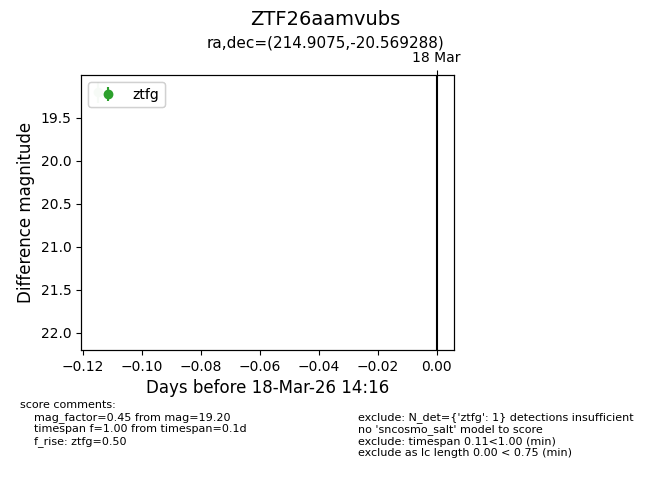
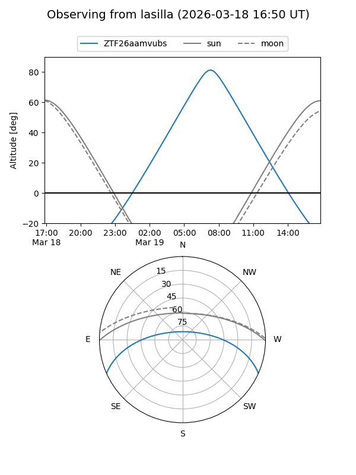
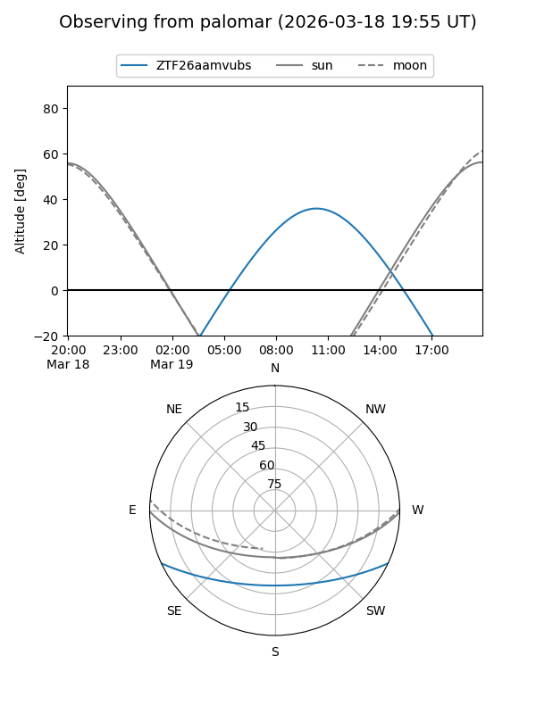

ZTF26aamvubs
Target ZTF26aamvubs at 2026-03-18 14:18
Aliases and brokers:
FINK: link
Lasair: link
ALeRCE: link
alt names
ZTF26aamvubs (ztf,fink_ztf)
Coordinates:
equatorial (ra, dec) = 214.9075,-20.56929
equatorial (HMS+DMS) = 14:19:37.81,-20:34:09.44
galactic (l, b) = (329.3195,+37.74210)
Flags:
Photometry:
last ztfg=19.20
1 ztfg detections
Lightcurve

Visibility


Additional plots